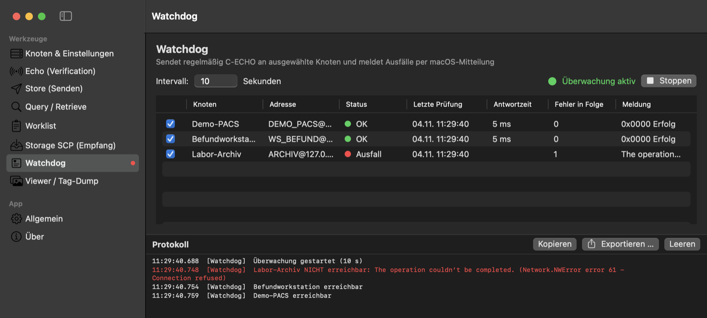
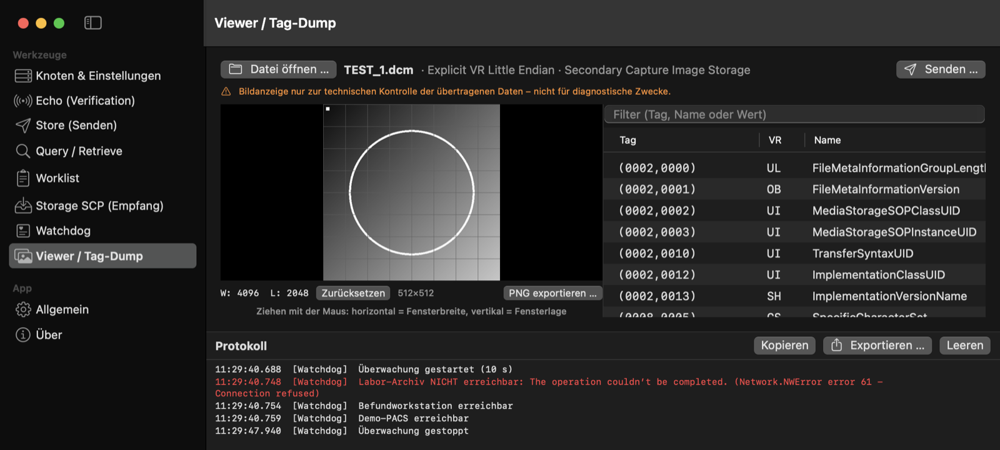

Everything you need to test a DICOM connection
Built for PACS administrators, biomedical and medical IT engineers, and IT support. It uses its own DICOM networking implementation, written natively in Swift, with no third-party libraries.
Echo (Verification)
C-ECHO “DICOM ping” with timings for association, echo and total time, plus repeat runs.
Store
Send files and folders by drag & drop, or generate test images without real patient data. Implicit ↔ Explicit VR conversion is automatic.
Query / Retrieve
C-FIND at patient, study, series and image level, double-click to drill down, C-MOVE to any destination.
Modality Worklist
Query your RIS worklist exactly as a modality would, and check orders and station assignments.
Storage SCP
Turn your Mac into a DICOM receiver. Files are sorted by patient ID – ideal as a C-MOVE destination.
Watchdog
Keep monitoring nodes with C-ECHO and get a macOS notification when one goes down or comes back.
Tag viewer
All tags including sequences, with filter; image display with windowing, multi-frame, JPEG / JPEG 2000 and PNG export.
Menu bar access
Start the SCP or Watchdog, send an echo or open any tool from the menu bar – even over full-screen apps.
- Detailed protocol log including presentation context negotiation, exportable as TXT
- Date fields with a calendar picker
- Guided tour through every tool
- Light/dark mode or a clinical dark theme (black / orange)
- Automatic updates from GitHub Releases, with checksum and signature checks
- Launch at login, auto-start of SCP and Watchdog
- Command-line tool
dicomcliincluded - User interface currently in German
What it looks like
Captured with demo nodes and a generated test image – no real patient data.


Installation
Takes less than a minute. Updates are then installed from within the app.
- Download DICOM-Test-Tool.dmg and open it.
- Drag DICOM Test Tool onto the Applications folder.
- First launch only: macOS blocks the app because it is not notarised by Apple. Click Done, open System Settings › Privacy & Security, scroll down and click Open Anyway.
Requirements: macOS 14 Sonoma or later, Apple Silicon or Intel Mac.
Privacy
- No telemetry, analytics, ads or account. The app sends nothing to the developer.
- Network connections go only to the DICOM nodes you configure, and to GitHub for the update check (you can turn it off). GitHub sees your IP address for these requests.
- Settings, logs (kept 30 days) and received files are stored locally on your Mac only.
- DICOM objects and logs can contain patient data – handle them according to your organisation's policies, and remove patient data before sharing logs.
Intended use & legal
- Intended use: setting up, testing and troubleshooting DICOM network connections, by IT staff, PACS administrators and biomedical engineers.
- Not certified: not certified or validated by NEMA or any other body; no claim of full DICOM conformance and no DICOM Conformance Statement.
- Trademarks: DICOM® is the registered trademark of the National Electrical Manufacturers Association (NEMA) for its standards publications relating to digital communications of medical information. It is used here only descriptively; this project is not affiliated with NEMA. macOS is a trademark of Apple Inc.
- A private, non-commercial open-source project under the MIT License, provided without warranty.